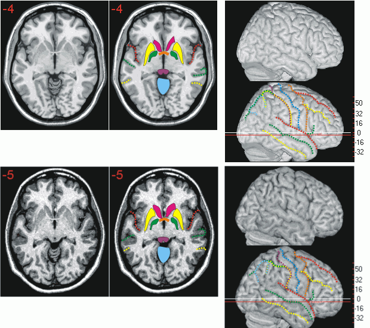
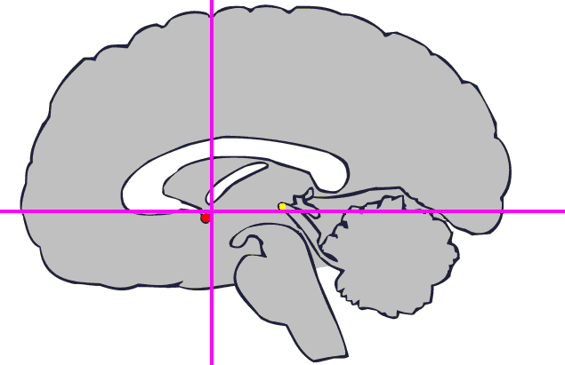
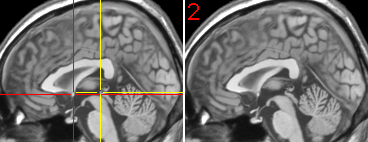

Atlas
Links
| The anterior commissure | Introduction Atlas Links |
Overview
As described in the introduction, the anterior commissure is the origin for the Talairach coordinate system. More details can be found at the MRC-CBU imaging web pages and at William Irwin's page. The anterior commissure (ac) is a thin white matter tract between the olfactory areas of each hemisphere. With MRI scans, the ac is easiest to find in the axial view. With SPM, you can often get a better normalization if you specify the location of the ac before normalizing. If the location of the ac is not set, SPM's starting estimate will locate the AC at the centre of the volume. Setting the location of the ac is easy, and is described in my tutorial. Note that after normalization, the ac may be slightly mislocated. This is because SPM adjusts the overall shape of the brain, so the ac estimate may not be an exact match. Some landmarks to look for are:

The diagram below shows the location of the ac (red dot) on a midsagittal view. Note that the orientation of axial plane in Talairach space officially lies immediately dorsal to the ac and ventral the posterior commissure (pc, yellow dot). In practice, automated normalization adjusts the overall shape of the brain, and the ac and pc are rarely precisely at plane 0 in Talariach space. The mri scans on the right shows the location of the ac and pc on the scan 'ch2' that is distributed with MRIcro.
|  |  |
Chris Rorden, 13 October 2002